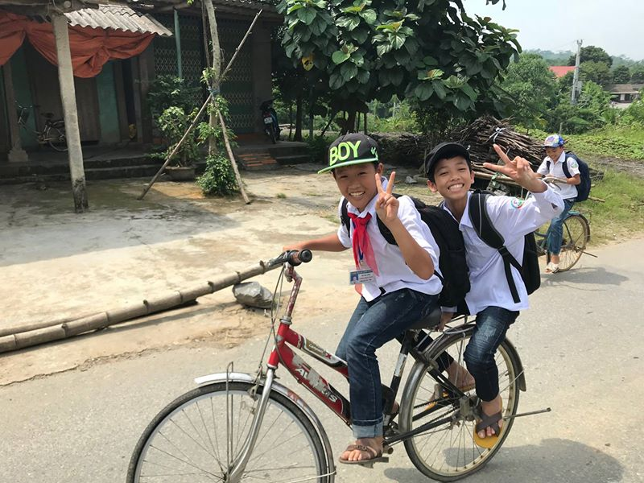
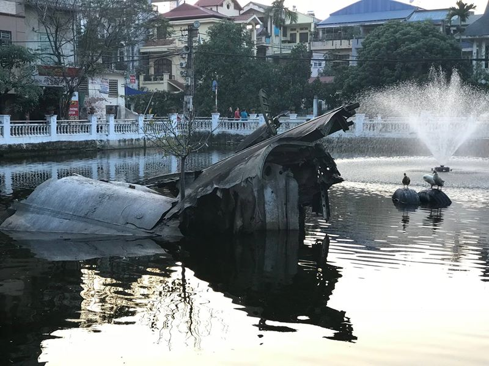
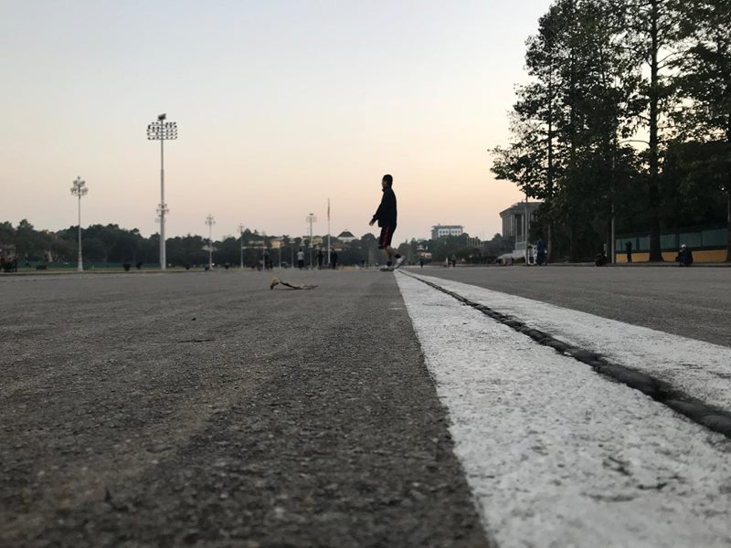

Vietnam (+ krátká návštěva Bangkoku)
Fotostory z Vietnamu s krátkou zastávkou v Bangkoku.
Pár minut před vypršením čínského víza vjíždím do Vietnamu, do Lao Cai. V Číně jsem se nestihl za celý den najíst, ale to nevadí, mířím přeci do Vietnamu, do země provozovatelů nejlepších večerek na světě! Jak velkého zklamání se mi dostalo, když jsem v 10 večer nemohl najít ani jednu…
V Lao Cai jsem měl zůstat jen krátce, nicméně mi má čínská přítelkyně napsala, že by mohla přijet na víkend do Vietnamu (což by mimochodem znamenalo, že to by to bylo poprvé, co by byla v jiné zemi, nikdy Čínu neopustila). A tak v pátek po práci nasedla na vlak a celou noc cestovala na hranice. Zde nejprve čekala 3 hodiny do otevření hranic, aby jí řekli, že o víkendu se vízum nedává a že se má vrátit. Takže zkoušela dostat vízum jiným způsobem, přes cestovní agenturu, ale opět neúspěšně. Už jsem se smířil že to asi neklapne, ale to by nebyla ona, aby nenašla řešení. A tak mi zničehonic o hodinu později psala, že je ve Vietnamu, poslala mi fotku okolí a že ji mám rychle najít, protože absolutně neví, kde je a ať to prostě ukážu lidem, že mě navedou. Psal jsem ji, ať se vrátí na hraniční přechod, že ji tam vyzvednu, ale ona mi odepsala, že vůbec nemá tušení, kde nějaký hraniční přechod je... To mi začalo být trochu podezřelé, přece musí vědět, kudy se sem dostala, ne?
Nevěděla. Moje milá totiž dostala kontakt na pašeráky, kteří ji zavezli kamsi za město a převedli ji přes řeku do Vietnamu, takže se sem dostala nelegálně.
Zavedl jsem ji tedy do hotelu, kam jsem ji propašoval zadním vchodem restaurace až na pokoj a tam jsme strávili celý víkend, jen večer jsem ji zase musel propašovat do korejské restaurace, protože je slečna ochotna kvůli korejskému jídlu riskovat vězení.
Další den musela zase vlakem zpátky. Tentokrát jsem ji doprovázel až k pašerákům, protože měla děsný strach z toho, že ji někdo znásilní. Během cesty s pašeráky telefonovala a ti ji naváděli do místa, kam má jít. A tak jsme se dostali až do jednoho z rozbořených vietnamských domů, kam přišli dva polosvlečení potetovaní kluci a začali se všichni spolu čínsky bavit, jak ji zase dostanou zpět. Jeden z nich ji permanentně říkal, jak je krásná a je fakt, že její strach mohl být na místě. Po půl hodině ji jeden z nich vzal na motorku a ještě s jednou holkou odjeli někam na místo, odkud je převedli lodí (na fotce) na čínskou stranu řeky. Ona se mnou během té doby sdílela online polohu a já si zase vyhlédl policejní stanici, kam bych musel jít, kdyby přestala reagovat. Naštěstí nepřestala a dostala se šťastně až do vlaku směrem do Kunmingu.
Od té doby za mnou Rui jezdila každý týden nebo každý druhý týden, pokud dobře počítám, tak celkem 6x, vždy na víkend. Každý večer v pátek do vlaku, celou noc do Vietnamu a zase v neděli celou noc zpět do Kunmingu a ráno rovnou do práce. Já se během následujících 4 měsíců pokoušel dvakrát získat čínské vízum, leč pokaždé mi byl vstup do Číny zamítnut. A já se jim ani nedivím, její sestřenice prý už také nechtějí za partnery Číňany, ale do budoucna jen Čechy.

To nejlepší na Asii je jídlo. Čínské, vietnamské, korejské, japonské a thajské, beru všechno. I když už mám pocit, že jsem zkusil skoro všechno, stále mě něco překvapuje. Třeba tady ve Vietnamu dostanu občas místo nože nůžky a maso si musím nastříhat.
Typická vietnamská street food restaurace. Všechny mají titěrné židle, na kterých se nedá sedět, pokud člověk měří více než metr. V Hanoji jsem se ptal jedné Vietnamky, proč mají tak nízké židle a ona mi řekla, že je to proto, protože jsou malí, ne asi.
Kromě street food najdete taky všude street kadeřníky.
Nina byla první Vietnamka, kterou jsem poznal. Řekla mi spoustu věcí o Vietnamu, díky ní jsem procestoval celou Sa Pu. Jednou za mnou přišla a řekla mi, že má známého, který by mi mohl půjčit motorku, pokud na ní umím jezdit a pokud mám řidičák. Já jsem bohužel na motorce nikdy neseděl a neměl jsem na ni ani ten řidičák…
… takže jsem samozřejmě souhlasil. Na Youtube jsem si našel nějaká videa, jak se to vlastně startuje a tak, abych vypadal zkušeně, až si ji budu přebírat.
Díky tomu jsem získal volnost a mohl procestovat okolí. Mezi Sa Pou a Honojem jsem nakonec najezdil více než 3000 km, během kterých jsem se snažil vyhýbat policii.
Krásy Sa Py.
Jezero někde v okolí Sa Py.
Po pár odjezděných kilometrech jsem se cítil dostatečně erudovaný na to, abych vyučoval jízdu na motorce i ostatní. Vzal jsem tedy Rui do odlehlých vesniček Sa Py a obdaroval ji cennými radami do začátku.
Při jedné nešťastné události se však poroučela k zemi. Můj smartphone je tak chytrý, že ten moment sám zachytil. Následky havárie byly tragické …
… musel jsem totiž čekat věčnost, než si upraví makeup.
Je krásný den, 30 stupňů, mířím do Sa Py, vítr ve vlasech a najednou je vidím. Dva příslušníci vietnamské policie, kteří mi gestem naznačují, že si chtějí povídat. Ve světlých uniformách vypadají jako četníci ze St. Tropez. Jak se k nim přibližuji, tak se ještě několikrát posunky ubezpečuji, že opravdu chtějí zastavit mě, že jsem to gesto správně pochopil, že si to opravdu nechtějí rozmyslet, ale s ohledem na to, že jsem široko daleko jediný motorkář, tak vím, že jsou mé naděje na úspěch minimální.
Policejní kontrola samozřejmě není problém, pokud máte řidičák na motorku, mezinárodní řidičák na motorku, techničak a motorku v požadovaném stavu. Ani jedno z toho jsem bohužel neměl. Měl jsem však srdcervoucí dopis od majitelky motorky a špatně ofocenou kopii technického průkazu. Ten je důležitý, protože u každé kontroly je také nákladní auto, kam odložíte svůj stroj, pokud nemůžete prokázat jeho vlastnictví.
Kromě toho, že jsem neměl doklady, jsem také neměl zpětná zrcátka a Číňanka, která zrovna se mnou cestovala, neměla přilbu. Co si budeme povídat, vyjednávací pozice nebyla dobrá. Jeden ze strážníku mi nejprve vyjmenoval, proti čemu všemu jsem se provinil a vzal si mě stranou s tím, že mě to něco bude stát. Já jsem mu nesměle ukázal bankovku v přepočtu 200 Kč. On se usmál, vzal si moji peněženku a naznačil mi, že více touží po bankovce s hodnotou 500 Kč a že tím bude celá záležitost vyřízená.
V tu chvíli ke mně přiběhla Rui a začala se dožadovat vysvětlení, o co jim jako jde, čímž vzbudila pozornost dalších třech kolemjdoucích, kteří se také zapojili do debaty jako překladatele. To už nás bylo poměrně hodně a strážníci si už nemohli říct o úplatek a nechali nás se slovy “Please, respect our rules!” odjet.
Rada pro vás: pokud chcete cestovat Vietnamem, vybavte se zvědavou Číňankou!
Jak řešit situaci, kdy chcete světu ukázat svou módní čepici, ale musíte si vzít přilbu?
Ve Vietnamu je velké množství etnických menšin. Mělo by jich tady být více než 50. Liší se jak jazykem, tak především vzhledem a oblečením. V jedné vesnici lidé vypadají tak a o kilometr dál úplně jinak. Je to neuvěřitelně pestré a podle mě je to to nejlepší na Vietnamu. Proto má smysl mít vlastní dopravní prostředek. Mnoho lidí přijede do Vietnamu a jen autobusem přejíždí mezi turistickými místy, čímž se o tohle připraví.
Homestay uprostřed rýžových polí. Mnoho Vietnamců nabízí možnost přespání, můžete tak poznat život různých etnických menšin zblízka. Ceny jsou obvykle kolem 100 Kč na noc, nejlevnější homestay, který jsem našel, byl za 60 Kč včetně snídaně a vodky.
Po měsíci na severu se nepříjemně začalo blížit datum expirace víza. A tak bylo na čase prodloužit cyklojízdu až do Hanoje. Značnou část 400 km trasy mě doprovázely vietnamské děti a jejich neustálá volání “Hello!”, “I love you” a “Money! Money! Money!”.

Holanďan, jehož jméno jsem už zapomněl. Je to už třetí důchodce, kterého jsem během mých cest potkal, který se jednoho dne sbalil a vyrazil na cestu kolem světa. Tenhle chce objet celý svět na tomhle.
Po třech dnech jsem se dostal do Hanoje, do města, kde platí dopravní anarchie. Pokud člověk přežije dopravu v Hanoji, tak ji přežije už všude jinde na světě.
Já měl ale jiné starosti, po příjezdu do Hanoje mi mělo za dva dny vypršet vízum a já musel najít destinaci, kam utéct. S Rui jsme se dohodli, že si uděláme výlet do Bangkoku.
Cesta na letiště s Uber mototaxi. V Hanoji je to nejlevnější způsob způsob přepravy, když nebudu počítat autobusy. Na druhou stranu Uber se vyznačuje tím, že jeho řidiči jsou schopni se ztratit i s GPSkou, jak se nám několikrát podařilo.
Let do Thajska poznamenaly mírné turbulence a já tak mohl zažít, jaké to je, když celé letadlo Vietnamek začne synchronně řvát o pomoc.
Pouliční umělec v Bangkoku.

Od Rui jsem dostal (poprvé a nejspíš i naposled) za úkol vybrat v Bangkoku hotel. Našel jsem jeden hezký, levný, jeho jediná nevýhoda byla lokalita, byl totiž uvnitř “red district”, tj. místa, kde se koncentrují prostitulky a hledají si tam své zákazníky.
Jednou jsem se ulicí procházel večer sám. V jednu chvíli se na mě vrhla nějaká černoška, chytla mě za ruku a začala mě agresivně tahat do jednoho z okolních domů, jako když krokodýl popadne svoji oběť a začne ji táhnout ke dnu.
#metoo
Od té doby jsem už na ulici vycházel jen bezpečně s Rui. Třeba do aquaparku.
Thajské toalety. Spoustu tlačítek pro všechno. Chybí pouze tlačítko pro spláchnutí.
“I want to make a wish! I want to make a wish!” slyšel jsem mnohokrát po příletu do Bangkoku. Erawan Shrine bylo pro Číňanku nejdůležitější místo v Bangkoku, neboť přání zde vyřčená se prý jistě splní.
Kdy navštívit Bangkok? No, určitě ne v období povodní.
Alespoň jsem měl více času přemýšlet, kam pokračovat dále, a rozhodl jsem se prodloužit si o pár týdnů svůj pobyt ve Vietnamu.
A tak jsem se po pár dnech vrátil zpět do Hanoje.
Na fotce je Mozaiková zeď, která má několik kilometrů a zobrazuje historii a kulturu Vietnamu.
Jak asi víte, Vietnam není úplně nejbohatší země, a tak si lidé musí pečlivě hlídat všechen majetek.
Hanoi train street. Několikrát denně tudy projíždí vlak jen několik centimetrů od okolních budov.
Takové to, když vám dvě na sobě nezávislé Vietnamky tvrdí, že West Lake, největší jezero v Hanoji, má dokola jen něco kolem 7 km. A tak zhruba měsíc přemýšlíte, že to jednoho dne oběhnete. A pak ten den přijde. Poprvé po 5 měsících se rozhodnete běžet. Venku je 28 stupňů, nazujete své botky, které nejsou pro běh vůbec vhodné, a vydáte se vstříc nižší váze. A po 7 km zjistíte, že jste v polovině.
V Hanoji jsem potkal mnoho zajímavých lidí. Třeba Hoa, která mě několik večerů učila kreslit portréty. Vlastně je to první umělkyně, malířka, kterou znám.
Přemýšlel jsem, co s časem ve Vietnamu a rozhodl jsem se projet celý Vietnam, Laos a Kambodžu na motorce. Nicméně konec listopadu na to není ideální a hory vypadají jako na fotce. Po dvou týdnech čekání na hezčí počasí jsem se na to vykašlal a vrátil se zpět do Hanoje.

Asijským turistům to však nevadí. A tak i když není z vyhlídky nic vidět, stejně tady autobusy plné turistů zastaví a všichni si fotí bíle nic.
Jezero Huu Tiep Lake v Hanoji a v něm trosky sestřeleného letadla B52 z doby vietnamské války.

Muzeum věznice Hoa Lo, kde před sto lety Francouzi zadržovali vietnamské revolucionáře často odsouzené k smrti.
V době války ve Vietnamu tady byli drženi američtí zajatci vč. Johna McCaina, který v roce 2008 prohrál s B. Obamou prezidentské volby.
Vietnamské vojenské muzeum s hlavní dominantou, sestřeleným americkým letadlem.
Vojenské muzeum podruhé.
Náměstí u Ho Chi Minhova mauzolea.

Socha Lenina v Leninově parku.
Česká restaurace v Hanoji s českým menu a pivem!
West Lake, největší jezero v Hanoji. Čtyřměsíční pobyt ve Vietnamu se chýlí ke svému konci, do konce platnosti víza zbývá poslední týden. Loučím se s moji vietnamskou rodinou, beru kolo a vyrážím směr Laos. Co mě tam čeká?